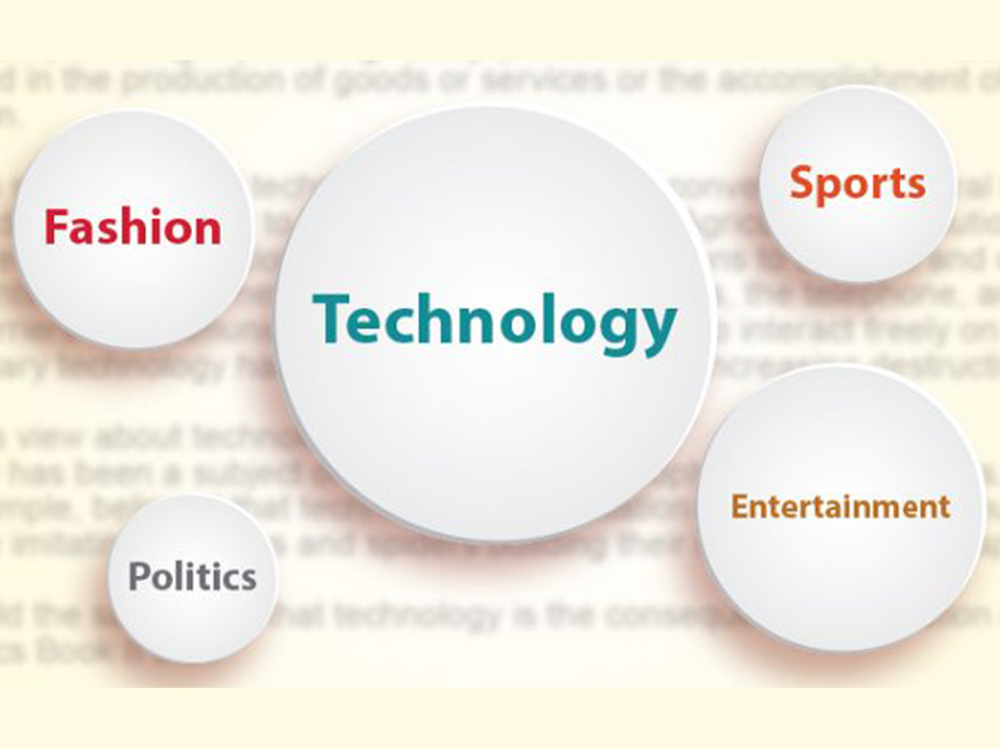

Jacek Filipczuk
Lead Machine Learning Engineer
Working as a Lead Machine Learning Engineer at Fitmate.
I am a Lead Machine Learning Engineer and Data Scientist with multiple
years of experience in Startup environment. I enjoy the challenge
of developing and optimizing ML models with a focus on the NLP domain, while bridging
the gap between buisiness goals and AI.
See my work

As a Lead Machine Learning Engineer I have strong experience in creating strategy plans for the development of AI capabilities,
aligning business objectives with AI solutions.
I have a Data Science and Computer Science background with a focus on NLP, Machine Learning, Deep Learning and Data Analysis.
My responsibilities span across all project phases: from R&D to creation of production-ready solutions.
I have excellent communication skills, and I'm experienced with reporting to C-level stakeholders.
Below you can find a selection of my past projects.

Chatbot

Content Categorization

Content Quality
The goal of this project was to automatically categorize questions asked by users of the platform
into a specific set of topics in order to improve the user's experience and allow a better filtering functionality.
The first step was to create a training dataset by labeling manually 5000 questions.
The questions were then preprocessed using a Deep Learning model called "BERT", that was first finetuned on the
training dataset. The outcome of the preprocessing step was to transform the questions into embeddings
(an embedding is a numerical representation of a text input).
The embeddings were used to train a classification Machine Learning model called SVM Classifier.
The final version of the classifier had 36 different classes and a F1 score (performance) of 80%.
The last step of the project was to create an API service to leverage the trained classifier in production.
The API service was built with docker and FastAPI, and hosted on GCP
This project was developed for a platform where users could submit questions about specific job positions and wait for
answers coming directly from employees of the company offering those roles. There were two goals for this project: the first was to
automatically check if a new question (or a similar one) was already answered on the platform, in order to avoid duplicated content and
fulfill the user needs; the second goal was to improve the search functionality of the platform.
The solution was built using the FAISS library (used also by GCP services) to index all the content of the platform. This was achieved by creating embeddings of
all the content and using the cosine similarity function to calculate a similarity score between the input content and all the content in the index.
The created solution was then leveraged by creating an API service using Flask, Docker and GCP hosting service and integrated into the main product.
This project was created for a platform in the HR domain, with the goal of automating candidate engagement and refresh candidate information
in the database of a recruiter. The use case of the first goal was to send the chatbot to a list of candidates and make them interact with it. The candidates were
able to ask questions regarding a specific job offer and the chatbot would, in return, collect some basic information about the candidates and notify the recruiter
about only the interested candidates. The use case of the second goal was to send the chatbot to a list of candidates and make the chatbot confirm that the candidates'
information was still up to date.
This project was created using mainly python, the open-source chatbot framework called Rasa and docker.
This project was created for a platform where users could submit questions and wait for answers. The goal of the project was to identify high quality and engaging type
of content from low quality and not engaging content. This was achieved by creating a Deep Learning classifier that is able to categorize content into high
and low quality. This project involved a delicate R&D phase focused on identifying rules to define high and low quality content. Next those rules where applied
to create a training dataset that was used to train the classifier. The resulting MVP model achieved 85% f1 score and was made accessible through an API
service built with docker and FastAPI.